5 segments of 30 s per video, sampled every 1/3 s. Green box = the 9:16 crop. Frames in each strip are 3 s apart. "In crop" = share of frames where the reference face lies fully inside the crop. Caveat: the reference face is one that YuNet and at least one other detector agree on, so YuNet is favoured by the reference; the strips are there so you can check by eye. Jitter = mean crop movement per sampled frame in 1280-px source pixels (shot cuts count as moves).
| Candidate | In crop % | Jitter px | Time per 30 s | Face-cam found % |
|---|---|---|---|---|
| Current skin-colour crop (baseline) | 42.3 | 0.0 | 0.01 s | 0 |
| OpenCV YuNet + smoothing | 92.3 | 10.7 | 1.54 s | 100 |
| MediaPipe BlazeFace + smoothing | 88.4 | 6.9 | 0.33 s | 12 |
| MediaPipe FaceLandmarker + mouth-activity | 80.8 | 4.3 | 0.46 s | 0 |
Verdict: best in-crop = OpenCV YuNet + smoothing (92 %), baseline 42 %.
Read the strips before trusting the numbers. On the gaming stream the "reference face" is mostly a game character, and every follow-the-face crop chases it: the streamer's own face-cam (top-left) is never inside the 9:16 box. YuNet does find the face-cam in 100 % of frames (skin baseline: 0 %), so its use here is as a face-cam locator for a stacked layout (face-cam on top, gameplay below), not as a crop follower. Plain 9:16 cropping is the wrong layout for this video type: verdict for A = inconclusive for crop, clear win for face-cam detection.
| In crop % | Jitter px | Time s | |
|---|---|---|---|
| Current skin-colour crop (baseline) | 84.6 | 0.0 | 0.01 |
| OpenCV YuNet + smoothing | 84.6 | 40.23 | 1.66 |
| MediaPipe BlazeFace + smoothing | 76.9 | 14.57 | 0.28 |
| MediaPipe FaceLandmarker + mouth-activity | 61.5 | 13.32 | 0.41 |
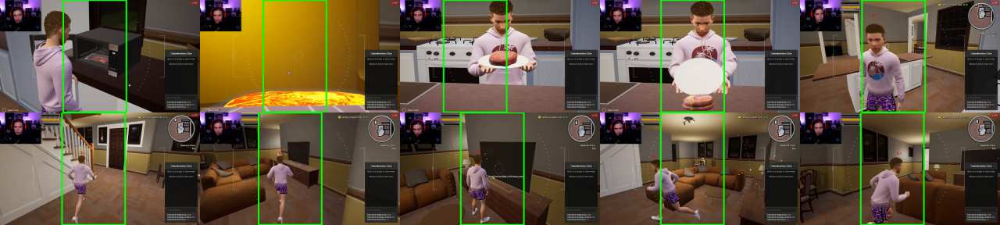
| In crop % | Jitter px | Time s | |
|---|---|---|---|
| Current skin-colour crop (baseline) | None | 0.0 | 0.01 |
| OpenCV YuNet + smoothing | None | 0.0 | 1.63 |
| MediaPipe BlazeFace + smoothing | None | 0.72 | 0.4 |
| MediaPipe FaceLandmarker + mouth-activity | None | 0.0 | 0.4 |
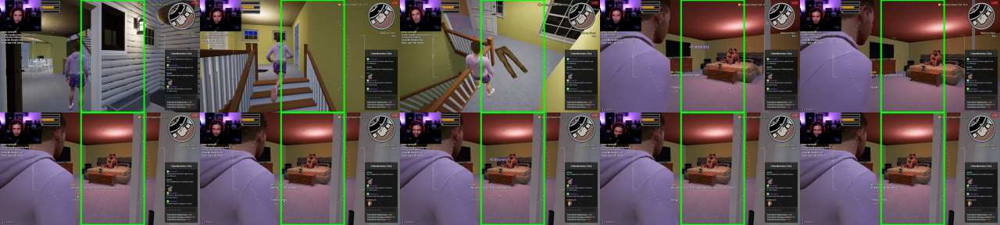
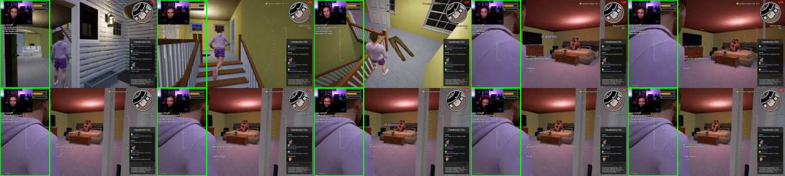
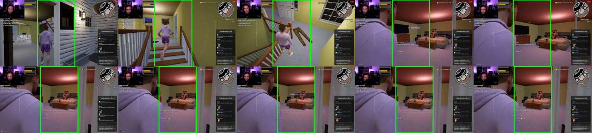
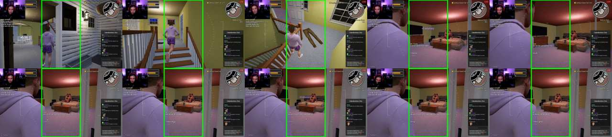
| In crop % | Jitter px | Time s | |
|---|---|---|---|
| Current skin-colour crop (baseline) | None | 0.0 | 0.0 |
| OpenCV YuNet + smoothing | None | 5.65 | 1.59 |
| MediaPipe BlazeFace + smoothing | None | 0.0 | 0.38 |
| MediaPipe FaceLandmarker + mouth-activity | None | 0.0 | 0.36 |
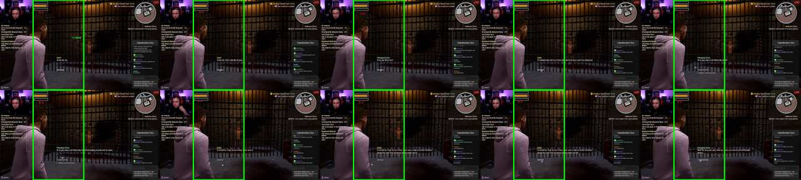
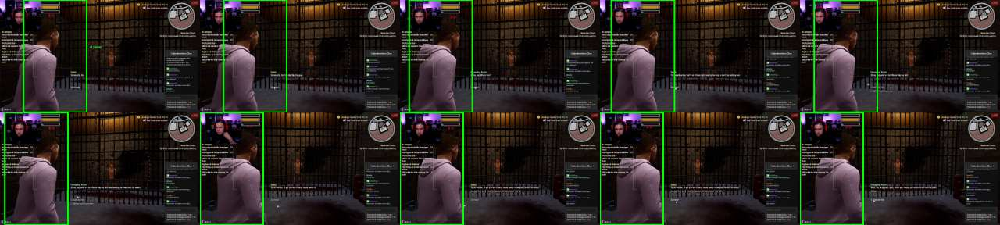
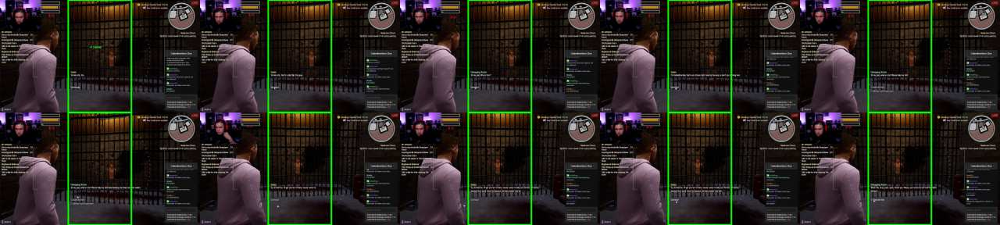
| In crop % | Jitter px | Time s | |
|---|---|---|---|
| Current skin-colour crop (baseline) | 0.0 | 0.0 | 0.01 |
| OpenCV YuNet + smoothing | 100.0 | 4.84 | 1.28 |
| MediaPipe BlazeFace + smoothing | 100.0 | 15.55 | 0.24 |
| MediaPipe FaceLandmarker + mouth-activity | 100.0 | 8.43 | 0.26 |
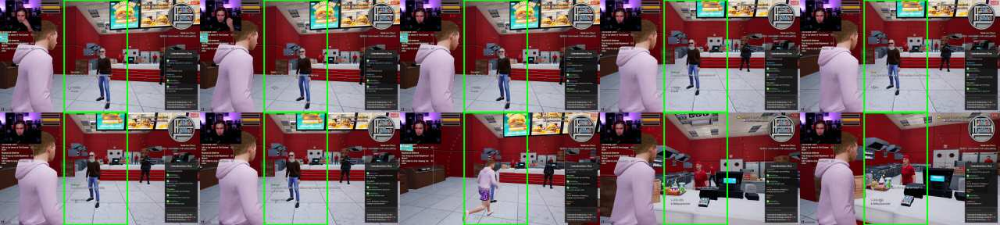
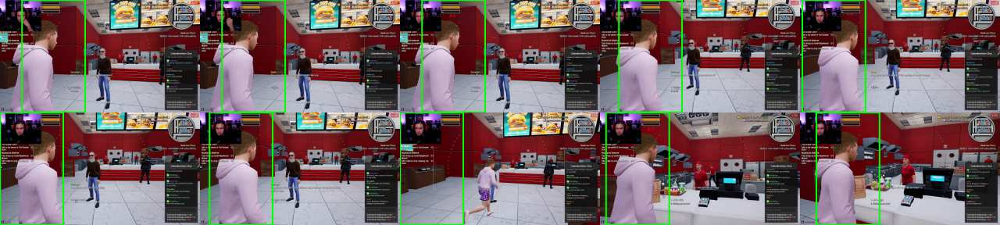
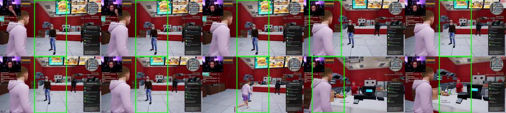
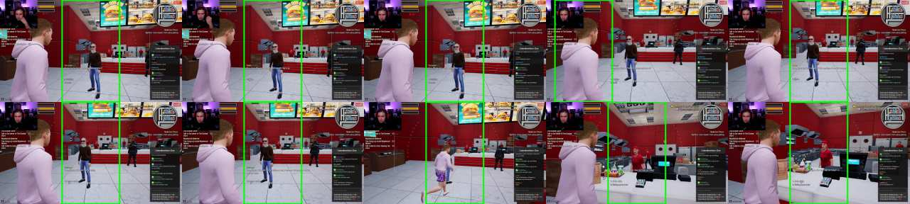
| In crop % | Jitter px | Time s | |
|---|---|---|---|
| Current skin-colour crop (baseline) | None | 0.0 | 0.0 |
| OpenCV YuNet + smoothing | None | 2.92 | 1.54 |
| MediaPipe BlazeFace + smoothing | None | 3.53 | 0.34 |
| MediaPipe FaceLandmarker + mouth-activity | None | 0.0 | 0.88 |
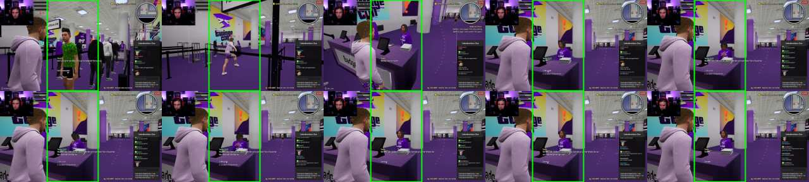
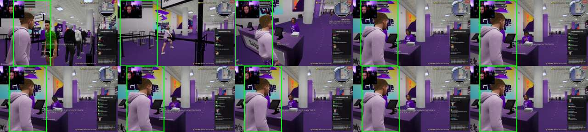
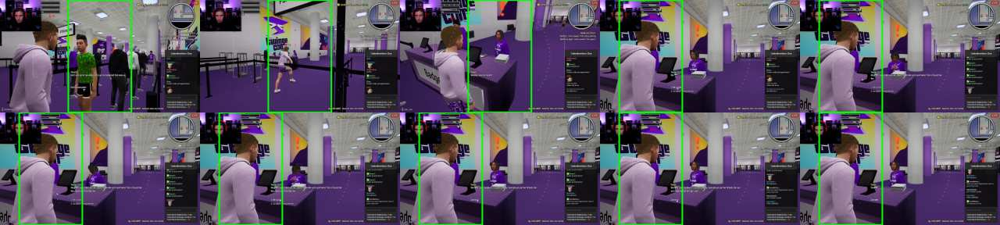
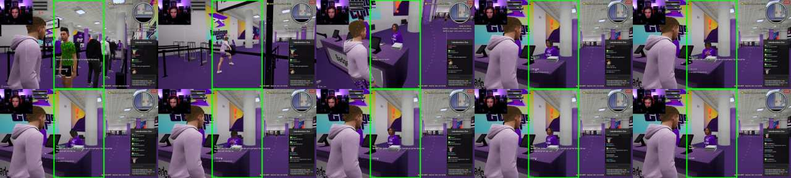
| Candidate | In crop % | Jitter px | Time per 30 s | Face-cam found % |
|---|---|---|---|---|
| Current skin-colour crop (baseline) | 10.2 | 0.0 | 0.01 s | 0 |
| OpenCV YuNet + smoothing | 89.1 | 56.5 | 1.80 s | 59 |
| MediaPipe BlazeFace + smoothing | 66.2 | 94.2 | 0.32 s | 59 |
| MediaPipe FaceLandmarker + mouth-activity | 76.0 | 47.2 | 2.27 s | 54 |
Verdict: best in-crop = OpenCV YuNet + smoothing (89 %), baseline 10 %.
| In crop % | Jitter px | Time s | |
|---|---|---|---|
| Current skin-colour crop (baseline) | 1.1 | 0.0 | 0.01 |
| OpenCV YuNet + smoothing | 95.6 | 64.21 | 2.02 |
| MediaPipe BlazeFace + smoothing | 70.0 | 101.3 | 0.24 |
| MediaPipe FaceLandmarker + mouth-activity | 70.0 | 75.01 | 2.06 |
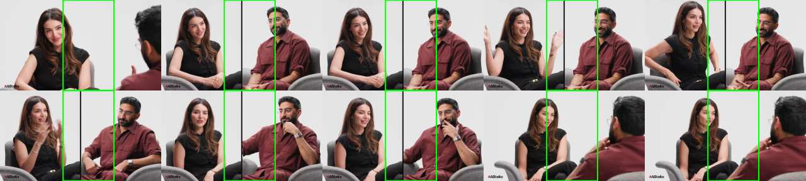
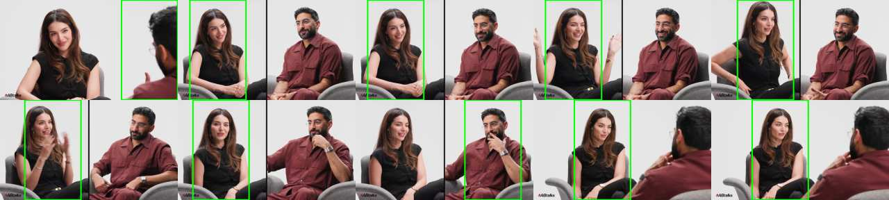
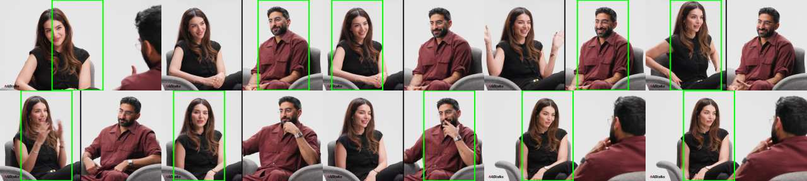
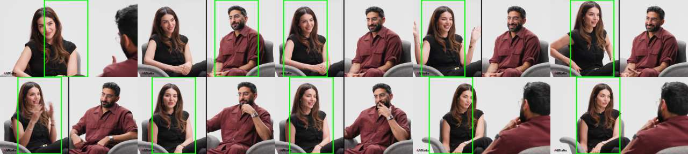
| In crop % | Jitter px | Time s | |
|---|---|---|---|
| Current skin-colour crop (baseline) | 7.8 | 0.0 | 0.0 |
| OpenCV YuNet + smoothing | 97.8 | 1.18 | 1.75 |
| MediaPipe BlazeFace + smoothing | 97.8 | 1.17 | 0.34 |
| MediaPipe FaceLandmarker + mouth-activity | 97.8 | 1.19 | 1.28 |
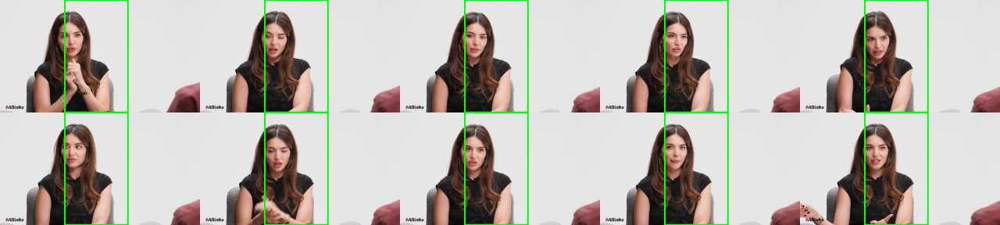
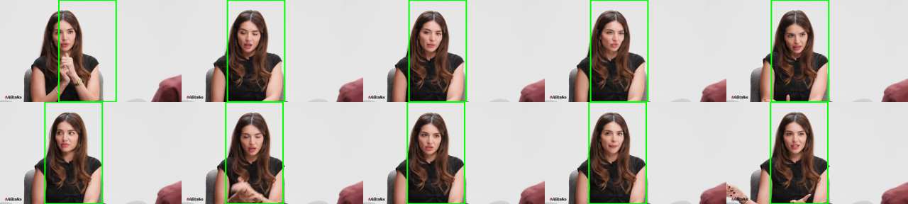
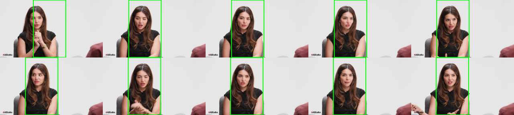
| In crop % | Jitter px | Time s | |
|---|---|---|---|
| Current skin-colour crop (baseline) | 0.0 | 0.0 | 0.01 |
| OpenCV YuNet + smoothing | 100.0 | 16.64 | 1.56 |
| MediaPipe BlazeFace + smoothing | 34.4 | 162.15 | 0.36 |
| MediaPipe FaceLandmarker + mouth-activity | 96.7 | 16.5 | 2.22 |
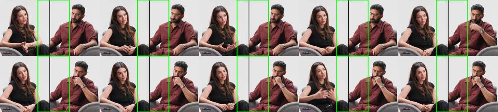
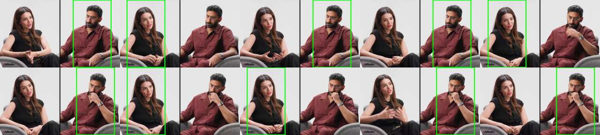
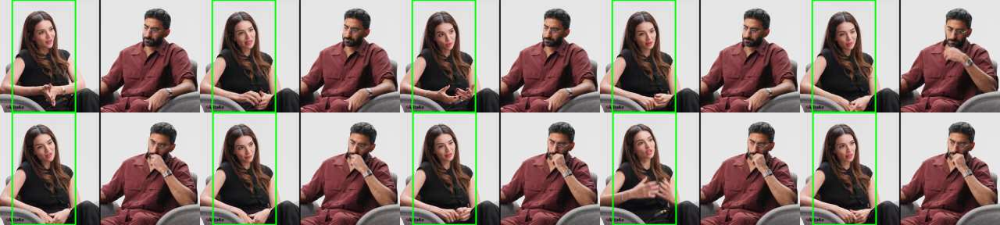
| In crop % | Jitter px | Time s | |
|---|---|---|---|
| Current skin-colour crop (baseline) | 15.6 | 0.0 | 0.0 |
| OpenCV YuNet + smoothing | 60.0 | 122.2 | 2.03 |
| MediaPipe BlazeFace + smoothing | 68.9 | 80.36 | 0.24 |
| MediaPipe FaceLandmarker + mouth-activity | 68.9 | 98.79 | 3.51 |
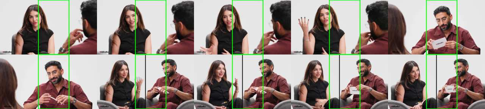
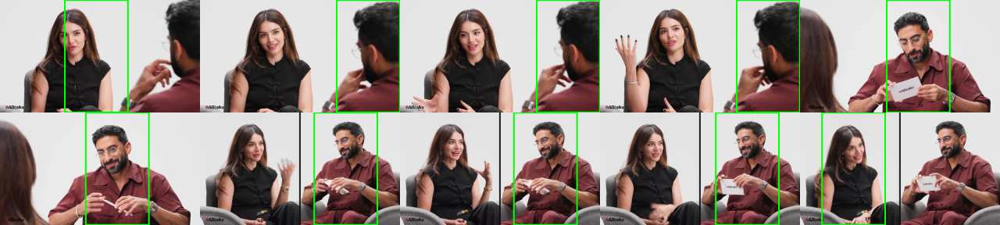
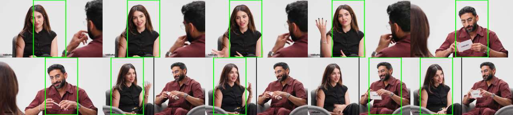
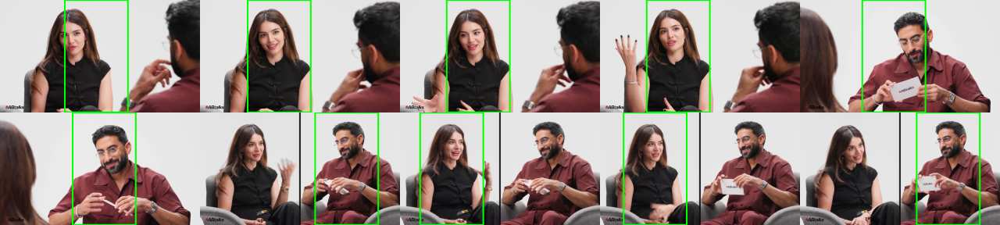
| In crop % | Jitter px | Time s | |
|---|---|---|---|
| Current skin-colour crop (baseline) | 26.7 | 0.0 | 0.01 |
| OpenCV YuNet + smoothing | 92.2 | 78.4 | 1.66 |
| MediaPipe BlazeFace + smoothing | 60.0 | 126.15 | 0.41 |
| MediaPipe FaceLandmarker + mouth-activity | 46.7 | 44.51 | 2.28 |
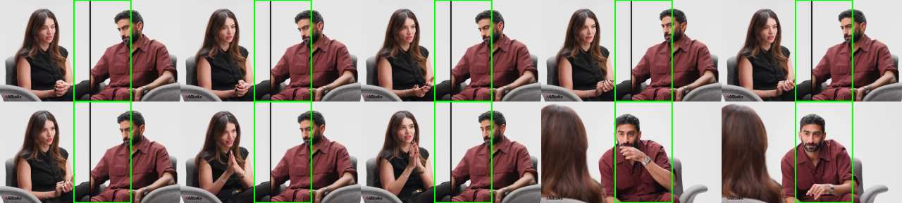
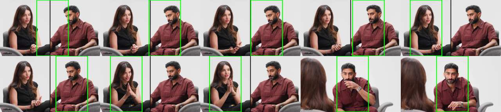
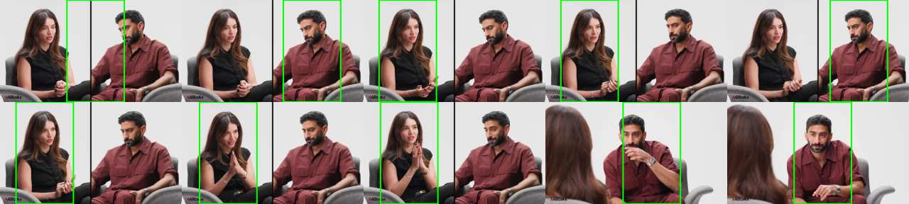
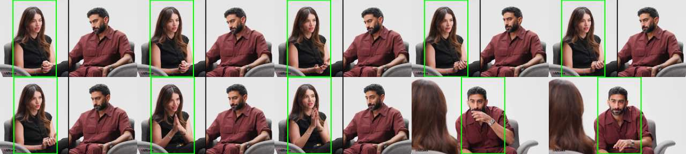
No face is visible in any segment (slides and a dark silhouette), so there is no reference: in-crop cannot be measured. All detectors correctly found no face; the pipeline should fall back to the centre crop. Strips below.
| Candidate | In crop % | Jitter px | Time per 30 s | Face-cam found % |
|---|---|---|---|---|
| Current skin-colour crop (baseline) | n/a | 0.0 | 0.00 s | 0 |
| OpenCV YuNet + smoothing | n/a | 1.0 | 1.54 s | 0 |
| MediaPipe BlazeFace + smoothing | n/a | 3.3 | 0.49 s | 0 |
| MediaPipe FaceLandmarker + mouth-activity | n/a | 0.0 | 0.47 s | 0 |
| In crop % | Jitter px | Time s | |
|---|---|---|---|
| Current skin-colour crop (baseline) | None | 0.0 | 0.0 |
| OpenCV YuNet + smoothing | None | 0.0 | 1.98 |
| MediaPipe BlazeFace + smoothing | None | 0.38 | 0.71 |
| MediaPipe FaceLandmarker + mouth-activity | None | 0.0 | 0.44 |
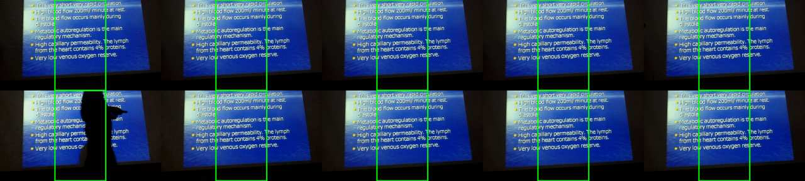

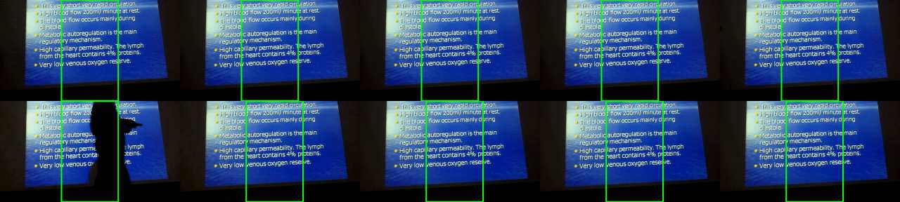

| In crop % | Jitter px | Time s | |
|---|---|---|---|
| Current skin-colour crop (baseline) | None | 0.0 | 0.01 |
| OpenCV YuNet + smoothing | None | 4.92 | 2.37 |
| MediaPipe BlazeFace + smoothing | None | 5.27 | 0.57 |
| MediaPipe FaceLandmarker + mouth-activity | None | 0.0 | 0.66 |

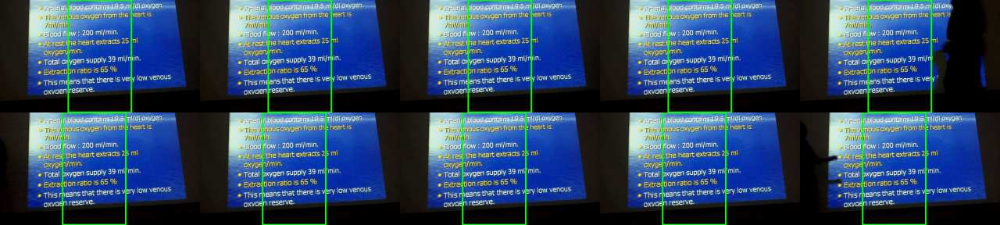

| In crop % | Jitter px | Time s | |
|---|---|---|---|
| Current skin-colour crop (baseline) | None | 0.0 | 0.0 |
| OpenCV YuNet + smoothing | None | 0.0 | 0.96 |
| MediaPipe BlazeFace + smoothing | None | 10.74 | 0.38 |
| MediaPipe FaceLandmarker + mouth-activity | None | 0.0 | 0.42 |

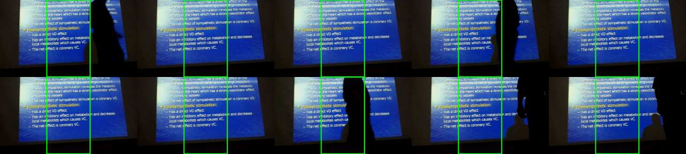

| In crop % | Jitter px | Time s | |
|---|---|---|---|
| Current skin-colour crop (baseline) | None | 0.0 | 0.01 |
| OpenCV YuNet + smoothing | None | 0.0 | 1.48 |
| MediaPipe BlazeFace + smoothing | None | 0.0 | 0.36 |
| MediaPipe FaceLandmarker + mouth-activity | None | 0.0 | 0.33 |


| In crop % | Jitter px | Time s | |
|---|---|---|---|
| Current skin-colour crop (baseline) | None | 0.0 | 0.0 |
| OpenCV YuNet + smoothing | None | 0.0 | 0.93 |
| MediaPipe BlazeFace + smoothing | None | 0.33 | 0.45 |
| MediaPipe FaceLandmarker + mouth-activity | None | 0.0 | 0.48 |
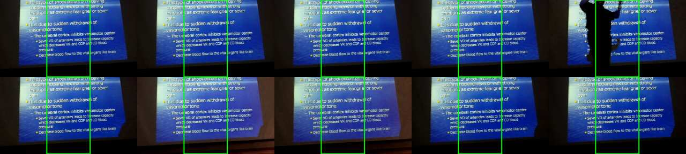

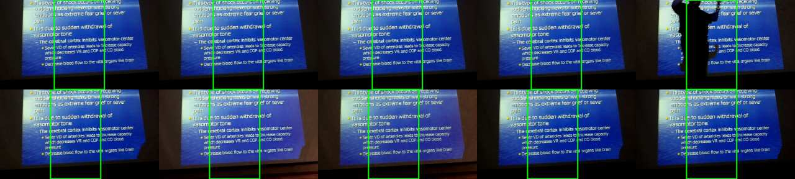